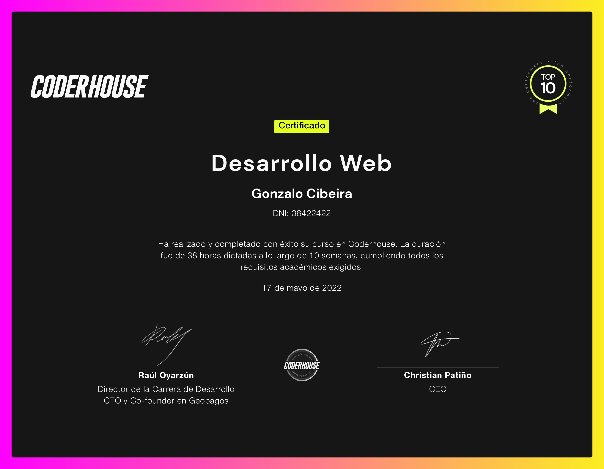
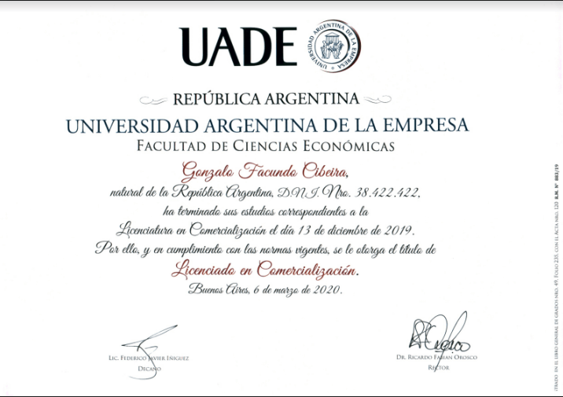
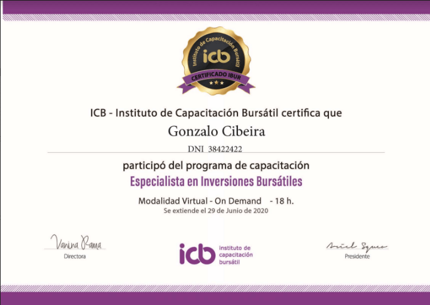
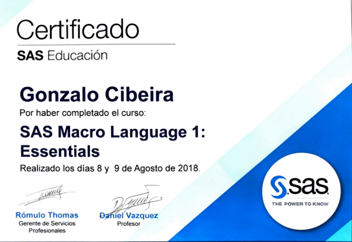

Hey, thanks for taking a look at my portfolio!
Hey, gracias por hechar un vistazo a mi portfolio!
I made this website from scratch in order to practice my coding skills. It's made using HTML5 + CSS + Bootstrap + SASS + JavaScript.
Be sure to check it out again as I'm constantly improving it and adding new features and info!
Programé este sitio desde 0 para poder practicar mis habilidades de programación. Fue hecho usando HTML5 + CSS + Bootstrap + SASS + JavaScript.
Asegúrate de chequearlo nuevamente ya que estoy actualizándolo y mejorándolo continuamente!


About me
Sobre mí
You have probably arrived here from LinkedIn or GitHub, so you already know at least the basics, but let me tell you more about me:
I was born and raised in the capital of Argentina (CABA), but since the start of 2022 I've been living in Valencia, Spain.
After going to a technical high school and then on to get a degree on automotive engineering, I realized that what I actually liked was the business world (thanks economics 101!) so I did a 180° turn and got myself a degree in Marketing.
Since then, I had many different roles working on both big corporations and up and coming startups, almost everything you can imagine from being in a call center to managing a multi-million euro client portfolio.
Probablemente hayas llegado a este sitio desde mi LinkedIn o GitHub, así que ya me conoces un poco, pero dejame contarte más sobre mi:
Nací y me crié en la capital de Argentina (CABA), pero desde comienzos del 2022 estoy viviendo en Valencia, España.
Luego de ir al secundario técnico comencé a estudiar Ingeniería Automotriz, pero pronto me di cuenta que lo que en verdad me gustaba era el mundo de los negocios (Muchas gracias Economía 1!) así que decidí hacer un cambio de 180° y me recibí de Licenciado en Marketing.
Desde ese momento, trabajé en diferentes roles tanto para compañias grandes como startups en pleno desarrollo, desde agente de atención al cliente hasta manejar una cartera de clientes de varios millones de euros.
Work experience
Experiencia laboral
Manager, Customer Success
Cubyn (Spain/France) - Jan 22
Cubyn (España/Francia) - Ene 22
As a Customer Success Manager at Cubyn my main focus was on the Spanish market customers.
My tasks consisted on onboarding new clients to our platform, advicing them on how to best use our services according to their needs and industry and be the single point of contact between them and the company.
I worked toghether with product and tech teams to solve customer's pain points and develop new features for our clients, while also unlocking new deals on the sales pipe.
Como Customer Success Manager en Cubyn mi principal foco son los clientes del mercado Español
Mis tareas consisten en onboardear nuevos clientes a nuestra plataforma, aconsejarles sobre cómo usar de la mejor fomra nuestros servicios según sus necesidades e industria y ser el punto único de contacto entre ellos y la empresa.
Trabajé en conjunto con los equipos de producto y tech para solucionar los pain points de los clientes y desarrollar nuevas features para al mismo tiempo poder desbloquear nuevos deals en la sales pipe.
Highlights:
- Managed a +40M € GMV customer portfolio.
- Gestioné una cartera de clientes de +40M € GMV
- Managed the entire rehaul of the Cubyn Help Center.
- Gestioné toda la reforma del Centro de Ayuda de Cubyn.
- Succesfully onboarded several +3M € customers to our platform.
- He onboardeado con éxito a varios clientes de +3M € a nuestra plataforma.
Senior Business Analyst (Strategic Planning team)
Analista de Negocio Senior (equipo de Strategic Planning)
Telecom Argentina - Jun 20 to Jan 22
Telecom Argentina - Jun 20 a Ene 22
In the role of Sr. Business Analyst for Telecom Argentina I was tasked with creating and challenging the CapEx & Sales budgets for the company in collaboration with all the company's stakeholders (service, tech, finance, sales, etc.).
On a daily basis, I would look into sales, churn and installation figures and work together with the relevant teams to make sure that that the company's roadmap was followed successfully.
En el rol de Analista de Negocio Senior para Telecom Argentina tuve a cargo la creación y validación de los presupuestos de CapEx y Ventas para la empresa en colaboración con todos los stakeholders de la compañia (service, tech, finanzas, ventas, etc.).
Diariamente, revisaba las cifras de ventas, churn e instalaciones y trabajaba conjuntamente con los equipos relevantes para asegurar que el roadmap de la empresa fuera cumplido.
Highlights:
- Created a smooth communication loop with all stakeholders.
- Establecí un circuito de comunicación fluido con todos los stakeholders.
- Successfully implemented regular progress reviews with C-level execs.
- Implementé con éxito revisiones periódicas de progresos con ejecutivos de nivel C.
- Led the implementation of sales roadmap for 2021
- Lideré la implementación del roadmap de ventas para 2021
Ssr. Business Analyst (Sales Strategy team)
Analista de Negocio Ssr. (equipo de Estrategia de Ventas)
Telecom Argentina - Dec 18 to May 20
Telecom Argentina - Dec 18 a May 20
I took the challenge of developing the BI stack on the B2C Sales Strategy team after I took interest in data on my previous role.
Before I took the role, the team was relying on a combination of Excel sheets and Access DBs. After some months, I had successfully migrated the team's data and reports to a modern stack (SAS, PowerBI, Metabase).
While working this role, I also trained the team members on how to use SQL, PowerBI and DAX and provided insights and business analysis on the sales strategies and policies.
Afronté el desafío de desarrollar el stack de BI en el equipo de estrategia de ventas B2C luego de inetersarme por los datos en mi puesto anterior.
Antes de tomar éste rol, el equipo dependía de una combinación Excel y BDDs de Access. Luego de unos meses, había migrado con éxito los datos e informes del equipo a un stack moderna (SAS, PowerBI, Metabase).
Mientras trabajé aquí, también entrené a los miembros del equipo en cómo usar SQL, PowerBI y DAX y produje insights y análisis de negocio sobre las estrategias y políticas de ventas.
Highlights:
- Modernized the team's BI stack.
- Modernizé el stack de Bi del equipo.
- Coached team memebers on how to use the new stack.
- Capacité a los miembros del equipo en el uso del nuevo stack.
- Generated insights that led to a 5% increase in sales.
- Generé insights que llevaron a un aumento del 5% en las ventas.
Business Analyst (Retention team)
Analista de Negocio (equipo de Retención)
Telecom Argentina - Feb 18 to Nov 18
Telecom Argentina - Feb 18 a Nov 18
Working as a Business Analyst for Telecom was a challenge because it was my first role on the company, so I had to quickly learn new products and processes.
I was in charge of analyzing the Churn data of the company and coming up with policies that would lead to a lower churn rate and better retention rates.
For this role, I also relied hevily on my communication skills, as I needed to be in sync with various stakeholders (product, call centers, finance) in order to better implement retention policies and help achieve the comapny's client and financial goals.
Trabajar como Analista de Negocio para Telecom fue un reto porque era mi primer rol en la empresa, así que tuve que aprender nuevos productos y procesos rápidamente.
Estaba a cargo de analizar los datos de churn de la empresa y desarrollar políticas que resultaran enmenor churn y mayores tasas de retención
para este rol, me apoyé en mis habilidades de comunicación, ya que debía estar en sintonía con varios stakeholders (producto, call centers, finanzas) para poder implementar mejores políticas de retención y ayudar a alcanzar las metas financieras y de clientes de la empresa.
Highlights:
- Took over and upgraded the data analysis inside the team.
- Me hize cargo y mejoré el análisis de datos dentro del equipo.
- Found and corrected several metric deviations.
- Encontré y correjí varios desvíos en las métricas.
- Successfully implemented churn reducing strategies (-7% on some client clusters).
- Implementé con éxito estrategias de reducción de churn (-7% en algunos clusters de clientes).
Business Analyst (Retention team)
Analista de Negocio (equipo de Retención)
Cablevision Argentina - Jan 17 to Jan 18
Cablevision Argentina - Ene 17 a Ene 18
As my first job as a Business Analyst, this position helped me learn the ropes of the corporate world and quickly develop the analytics and communications skills that would shape my career.
I was in charge of analyzing the effectiveness of the comapny's retention policies, and coming up with improvements and out of the box ways to up the retention rate at our call centers.
Al ser mi primer trabajo como Analista de Negocio, este puesto me ayudó a aprender las reglas del mundo corporativo y desarrollar rápidamente las habilidades analíticas y de comunicación que darían forma a mi carrera.
Estaba a cargo de analizar la efectividad de las políticas de retención de la empresa y desarrollar mejoras y formas innovadoras para aumetar la tasa de retención en nuestros call centers.
Highlights:
- Brainstormed and implemented new ways to up retention rates.
- Propuse y apliqué nuevas formas de aumentar las tasas de retención.
- Routinely presented area results to other teams.
- Presenté los resultados del área a otros equipos
- Established successful realtions with 3rd party call center's managing teams.
- Establecí relaciones exitosas con los equipos de gestión de los call centers tercerizados.
Customer Service Agent
Representante de atención al cliente
Cablevision Argentina - Apr 16 to Dec 16
Cablevision Argentina - Abr 16 a Dic 16
I worked as a CSA for teh Internet and TV product lines, managing inquiries over the phone and via chat.
I solved customer's issues related to billing, service use and low degree tech issues.
Trabajé como RAC para las líneas de productos de Internet y TV, gestionando consultas por teléfono y vía chat.
Resolví problemas de los clientes relacionados con la facturación, el uso del servicio y cuestiones técnicas de bajo nivel.
Highlights:
- On my short time at this position, I received the EDR award for best CSA.
- En el poco tiempo que estuve en este puesto, recibí el premio EDR al mejor RAC.
Education
Educación
Full Stack Developer
Full Stack Developer 1 year intensive course on Coderhouse.
Curso intensivo de 1 año de Full Stack Developer en Coderhouse
Investment Specialist
Especialista en Inversiones
Investment Specialist course taken in the ICB institute of Argentina
Curso de Especialista en Inversiones cursado en el instituto ICB de Argentina
Bachelor's Degree in Marketing
Licenciatura en Marketing
Degree obtained at UADE (Universidad Argentina de la Empresa)
Titulo obtenido en UADE (Universidad Argentina de la Empresa)
Web Development - Coderhouse
Bachelor's in Marketing - UADE
Licenciatura en Marketing - UADE
Investment Specialist - ICB Argentina
Especialista en Inversiones - ICB Argentina
SAS Macro Language 1 - SAS Education
Portfolio
Como Emigrar a Valencia
My first website, developed for the Coderhouse Full Stack Dev course.
It was developed using HTML + Bootstrap + SASS.
Link: Como Emigrar a Valencia
Mi primer sitio web, desarrollado para el curso de desarrollo Full Stack de Coderhouse.
Fue desarrollado usando HTML + Bootstrap + SASS.
Link: Como Emigrar a Valencia
2022
The Talent Gallery
Project I'm working on for the JS and React part of the Coderhouse Full Stack Dev course.
It is a new, minimalistic platform where recruiters can see professional profiles like they were paintings on an art gallery.
Link: The Talent Gallery
Proyecto en el que estoy trabajando para la parte de JS y React del curso Coderhouse Full Stack Dev.
Es una plataforma nueva y minimalista en la que los reclutadores pueden ver los perfiles profesionales como si fueran cuadros en una galería de arte.
Link: The Talent Gallery
2022

Despertar del Alma
My first real world project for a customer.
It's currently under development.
Mi primer proyecto real para un cliente.
Actualmente está en desarrollo.
2022
Contact
Contacto

Aren't we already connected on LinkedIn?
No estamos conectados en LinkedIn todavía?